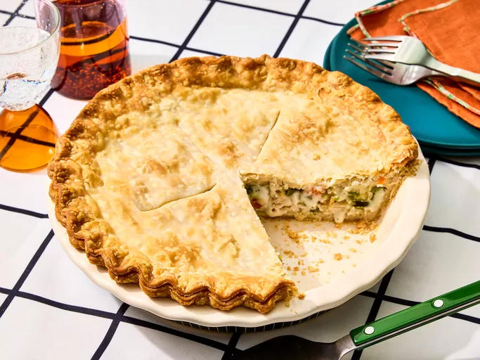

When the wind howls and the air turns crisp, there’s nothin’ more soul-warming than a slice of Momma’s Hearty, Meaty, Tasty Pot Pie. With flaky golden crust wrapped around a creamy, savory filling, this pie is pure country comfort. Tender chunks of chicken, hearty vegetables, and a rich, velvety gravy come together in a dish that feels like a warm hug from the inside out.
This ain't no dainty pie—it’s stick-to-your-ribs kind of eatin’. Every bite is a reminder of home-cooked Sundays, cozy suppers, and Momma’s apron dusted in flour. Whether you dish it out in big scoops or neat slices, one thing’s certain: folks will come back for seconds (and probably thirds). It’s love, baked into a pie dish.
In a large skillet or pot, melt 1/2 cup butter over medium heat. Add onion, garlic, carrots, and celery. Sauté until tender (about 8–10 minutes). Stir in flour and cook for 2 minutes to form a roux.
Slowly whisk in the chicken broth and bring to a simmer. Add in the cream or milk, stir well, and cook until thickened (about 5 minutes). Fold in chicken, peas, thyme, and any optional extras. Season to taste with salt and pepper. Let cool slightly.
Preheat oven to 400°F (200°C). Roll out one pie crust into a greased 9-inch pie dish. Pour in the filling evenly. Top with the second crust, crimping the edges to seal. Cut small slits in the top for steam to escape.
Beat 1 egg with a splash of water and brush over the top crust for a golden, shiny finish.
Bake for 35–45 minutes or until the crust is deeply golden and the filling is bubbling through the vents. If the edges brown too quickly, cover them with foil during baking.
Let rest for 10 minutes before slicing. Serve warm, maybe with a side of salad, or just all on its own. One forkful and you'll know why this pie is a family legend.
Momma’s Hearty, Meaty, Tasty Pot Pie—comfort wrapped in crust, straight from the heart of the kitchen.